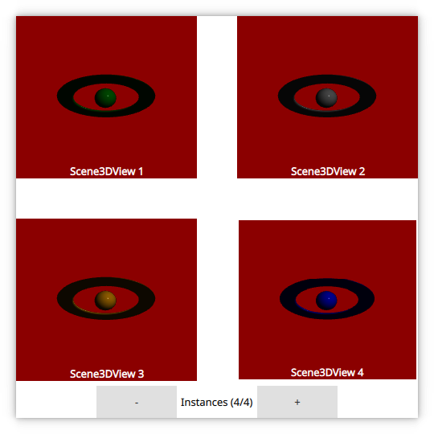

Qt 3D: Scene3DView QML Example
A QML application that demonstrates visualizing multiple 3D scenes using Scene3D and Scene3DView.

This example demonstrates visualizing multiple 3D scenes from a Qt Quick application usinc Scene3D and Scene3DView. Each 3D scene contains a single active camera and a single active light source. Visualized data is assumed to be at a fixed location.
Running the Example
To run the example from Qt Creator, open the Welcome mode and select the example from Examples. For more information, visit Building and Running an Example.
Visualizing 3D Scenes
First we set up a Scene3D instance that will be required for our Scene3DView instanced.
Scene3D { id: scene3dInstance anchors.fill: parent focus: true aspects: ["input", "logic"] cameraAspectRatioMode: Scene3D.AutomaticAspectRatio multisample: true }
Then we instanciate our Scene3DView instances and make them reference the Scene3D. We also provide a root Entity for each Scene3DView with a scene3dview/AnimatedEntity.qml.
Rectangle { width: grid.cellWidth height: grid.cellHeight color: "darkRed" scale: ma.pressed || ma.containsMouse ? 0.8 : 1 Behavior on scale { NumberAnimation { duration: 750 } } Scene3DView { onXChanged: console.log(("X (%1): %2").arg(model.index).arg(x)) scene3D: scene3dInstance anchors.fill: parent AnimatedEntity { sceneColor: grid.colors[model.index] // Only clear the color for the first Scene3DView clearColor: model.index === 0 } } Text { anchors { horizontalCenter: parent.horizontalCenter bottom: parent.bottom } color: "white" font.bold: true text: "Scene3DView " + (model.index + 1) } MouseArea { id: ma anchors.fill: parent hoverEnabled: true } }
Care has to be taken that only the first Scene3DView clears the color buffer. We don't want each Scene3DView to clear the screen as that would erase content for all but the last Scene3DView.
// Only clear the color for the first Scene3DView clearColor: model.index === 0